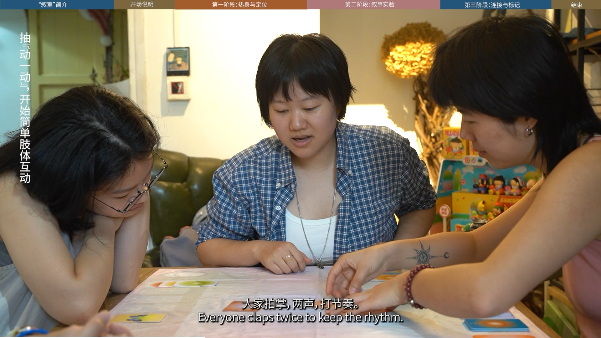

Project Snapshot
Project Background
Narrative Room is a product-service system developed for gap-year youth and young people in transitional life stages in China. Set within a community-led co-working space near Liangzhu Culture Village in Hangzhou, the project explores how a card-based facilitation system can support identity narration, self-understanding, and social connection in highly fluid community environments.
Research Focus
Based on literature review, participant observation, and three rounds of semi-structured narrative interviews, the research identifies key tensions shaping transitional youth experiences, including freedom and stability, individuality and belonging, creation and livelihood, mobility and deep connection. Through a research-through-design approach informed by narrative identity theory, identity status models, ritualization, and gamification, the project developed two rounds of offline card-based workshops and later extended into an online board-game version for user testing.
Contribution
Narrative Room proposes a lightweight 90–120 minute intervention that helps participants articulate their situations in a more storied way, strengthen their sense of being seen and self-efficacy, and generate ongoing weak-tie interactions and mutual support cues. The project translates theories of narrative identity and community ritual into a replicable card-based toolkit, while also offering a reusable service framework for youth-friendly communities and digital nomad hubs.


Video Overview

Video introdution for Narartive Room（叙室）, 5’15”
A short video introduction to the card system, dialogue flow, and workshop experience of Narrative Room.
Design & Facilitation & Editing / Shucen Liu
Camera / Wei Sun
Participants / Wulitou, Linyu, Huilin
Venue Support / Kongkong
Dave’s Cafe, Changsha
May 2026